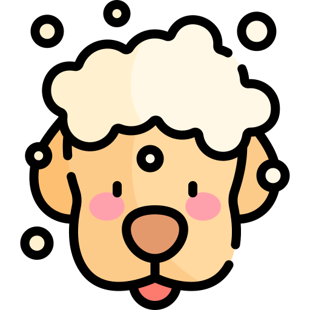
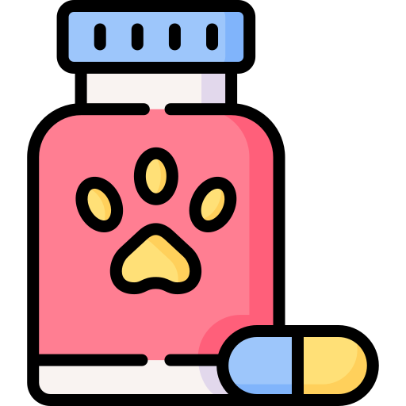

Nuestros servicios
Recuerda agendar una cita a través de nuestra página
Peluquería canina
Ofrecemos un servicio de peluquería canina diseñado para cuidar la salud y la apariencia de tu mascota. Nuestro equipo de expertos brinda cortes de pelo, baño, cepillado y cuidado de uñas, adaptados a las necesidades específicas de cada raza y tipo de pelaje. Además, utilizamos productos de alta calidad, hipoalergénicos y seguros para garantizar la comodidad de tu perro.
Medicina veterinaria
Brindamos atención médica integral para garantizar la salud y el bienestar de tu mascota. Nuestro equipo de veterinarios altamente capacitados ofrece consultas generales, diagnóstico de enfermedades, vacunación, desparasitación, tratamientos especializados y seguimiento personalizado. Contamos con equipos modernos y un enfoque centrado en el cuidado humano y profesional de tu compañero de vida.
Emergencias
Nuestro equipo de veterinarios altamente capacitados esta disponible para atender emergencias y cuidar a tu mascota cuando más lo necesita. Contamos con un equipo especializado y equipamiento avanzado para manejar situaciones críticas, como accidentes, enfermedades repentinas o cualquier problema que ponga en riesgo la vida de tu compañero.